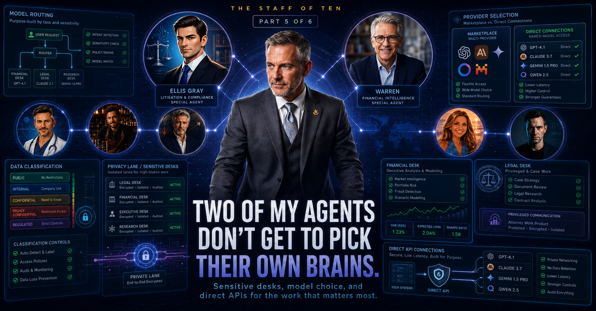

Almost nobody asks which AI model is actually reading their words. For my most sensitive financial and legal work, I made it the first question.

When most people use AI, they think about what it answers. Almost nobody thinks about who's answering — which company's model, running on whose servers, actually processes the words you typed. You ask, an answer comes back, and the machine behind the curtain is invisible and interchangeable.
For most of my staff, I let it stay interchangeable. My rental agent, my home-ops manager, my bartender — they're routed through OpenRouter.ai, a marketplace that puts dozens of models behind one API and lets the cheapest capable one win the job. In my fleet, that's usually a budget monster like DeepSeek or MiniMax. When Sullivan is matching cocktails to bottles, I genuinely don't care which model does the matching. The stakes are a drink, and the marketplace is a great deal.
But two of my agents touch things where I care very much who's on the other side of the curtain. For those two, I took the choice away from the system.
Warren is my retirement CFO. His whole job is to reason over sensitive retirement inputs — accounts, balances, spend targets, risk tolerance, and the planning assumptions that decide whether work is optional someday. That is a different category of financial privacy.
Ellis is house counsel. He reviews sensitive agreements and terms I need to understand. His full name is Ellis Gray - a naming joke I made once and now can't retire, because it's still accurate every time he flags something that isn't a clean yes or no.
Sullivan knowing my bourbon shelf is not the same risk category. Warren handling financial planning inputs and Ellis reviewing agreements require a different level of trust. So they get a different rule.
You already think this way in the physical world. You care who has a key to your house, whose truck your furniture rides in, which pharmacy fills your prescription. When the product touches something sensitive, the identity of the vendor is part of the product.
An AI model is no different. For most tasks, the cheapest reputable option is fine — take the deal. For the two agents holding my most private data, the vendor isn't a detail to optimize away. It's a boundary to hold. When Warren reasons about my retirement, I know exactly which company's model is doing the reasoning, because I chose it.
Going direct also shortens the chain. Through a marketplace, my words pass through the router's hands and then the model provider's. Direct, there's one company, one agreement, one key. For a cocktail question I'll take the extra hop and the discount. For sensitive planning work, fewer hands is the feature.
I'll be straight about the cost, because pretending security is free is how people quietly abandon their own rules.
Pinning Warren and Ellis to a short trusted list means giving up the cheap, fast, always-available default the rest of the fleet enjoys. The trusted models cost more per use. They're occasionally busy when the bargain pool has capacity to spare. And the wall takes maintenance — it's a constraint you have to keep choosing. It would be trivially easy to "temporarily" route Warren through the cheap pool on a busy afternoon and just… never switch it back. The discipline is in not doing that.
That's the trade, stated plainly: my two most sensitive agents can be a bit slower and are more expensive than they need to be, and in exchange I know exactly whose model is reading the categories I care most about. I'll take that trade every time.
The mindset doesn't stop at model choice. The whole system — every agent, the dashboard, all of it — is designed for local access rather than public exposure. Sensitive financial inputs, legal material, health notes, and household logistics do not belong on a casual public endpoint. That boundary is not a preference I ask the agents to remember; it is an architectural rule I make the system live inside.
This is the part of the home lab I'd carry straight into any workplace conversation about AI: not every task should run on the same brain, and for the sensitive ones you should know and choose the brain. Companies are already wrestling with this — frontier models are expensive, and the instinct is to route everything toward whatever is the cheapest as adoption grows. That instinct is right for most tasks. It's wrong for the ones touching sensitive data, and that's the distinction worth holding onto. Data classification decides model choice, not convenience or cost. If a company asked me to lead on AI tomorrow, this is the first policy I'd write, and I got to stress-test it on my own sensitive categories first.
One desk left. She isn't mine — she works for my wife, under my wife's own login, and my agents have no application-level access to her data. The finale is about the strangest and most human piece of the whole system: how her people and my people get anything done together.